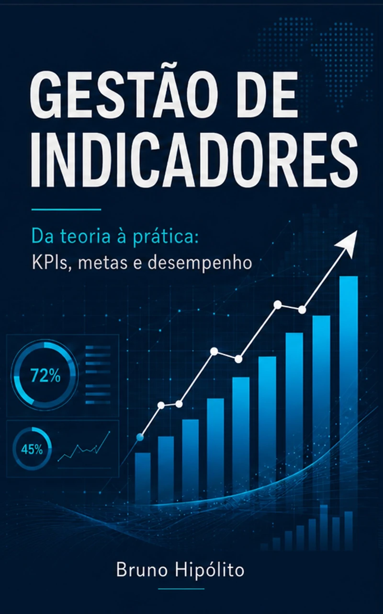

Engenharia & Otimização de Processos
Diagnóstico técnico, identificação de gargalos, aumento de rendimento, estabilidade, capacidade e produtividade.
Conhecer Engenharia & Processos →A JB Process & Tech é uma consultoria boutique para indústrias. Unimos Lean Six Sigma, engenharia de processos, dados e inteligência artificial aplicada. O caminho é diagnóstico, projeto e resultados sustentados na rotina — com liderança técnica de um Master Black Belt.
Atuamos como consultoria boutique: escopo claro, método e integração entre a operação, os dados e a tecnologia. Não começamos pela ferramenta. Começamos pelo problema da indústria.
Mapeamos fluxo, perdas, gargalos, restrições e variabilidade.
Estruturamos hipóteses, balanços, testes, CEP, DOE e melhorias.
Integramos bases, estruturamos KPIs, análises e dashboards.
Aplicamos analytics, modelos preditivos e IA quando há valor.
Automatizamos, controlamos e sustentamos os resultados obtidos.
A JB Process & Tech atua de forma transversal entre operação, qualidade, engenharia, gestão e tecnologia.
Diagnóstico técnico, identificação de gargalos, aumento de rendimento, estabilidade, capacidade e produtividade.
Conhecer Engenharia & Processos →Estruturamos projetos de melhoria contínua com método, indicadores, governança e foco em impacto mensurável.
Conhecer Excelência Operacional →Transformamos bases dispersas em indicadores confiáveis, análises estruturadas e dashboards para tomada de decisão.
Conhecer Dados & BI →Desenvolvemos soluções digitais para automatizar rotinas, integrar sistemas, prever comportamentos e otimizar decisões.
Conhecer Tecnologia & IA →Cada projeto liga o problema, a causa e o indicador que a operação precisa enxergar. Abaixo estão exemplos de indicadores que podemos estruturar — não são metas numéricas prometidas.
Identificação de gargalos, perdas de ritmo, restrições e oportunidades para ampliar capacidade efetiva.
Indicadores: OEE · vazão · t/h · cicloAnálise de balanço, variabilidade e parâmetros críticos para reduzir perdas e elevar rendimento de processo.
Indicadores: rendimento · refugo · perda · conversãoCEP, capabilidade, análise de causas e monitoramento para processos mais previsíveis e robustos.
Indicadores: Cpk · não conformidade · retrabalho · variabilidadeTraduzir perdas técnicas em leitura econômica para priorizar o que a operação decide atacar primeiro.
Indicadores: R$/t · energia · insumos · custoPainéis, indicadores e análises estruturadas para reduzir consolidação manual e apoiar a decisão.
Indicadores: prazo · SLA · aderência · previsãoDigitalização de rotinas, integração de sistemas e modelos preditivos aplicados onde existe valor operacional.
Indicadores: horas · erros · alertas · acuráciaCombinamos fundamentos de engenharia, estatística e vivência industrial para compreender o processo antes de propor a solução.
Mapeamento técnico de fluxo, perdas, gargalos, restrições e variáveis críticas.
Estudos para elevar produtividade, rendimento, estabilidade e eficiência operacional.
Estruturação de balanços para localizar perdas, consumos e oportunidades de eficiência.
Avaliação da capacidade real e identificação das restrições que limitam a produção.
Cartas de controle, estabilidade, Cp/Cpk e estratégia de monitoramento do processo.
Planejamento de testes para identificar os fatores que realmente impactam a resposta.
Suporte à transferência entre laboratório, piloto e escala industrial.
Transformação do conhecimento do processo em padrões, limites e controles sustentáveis.
Do Gemba à gestão executiva, estruturamos projetos e rotinas que conectam problemas, causas, ações, indicadores e resultado financeiro.
Fluxo, desperdícios, VSM, trabalho padronizado, Kanban, SMED e gestão visual.
DMAIC, análise de causa, redução de variabilidade e sustentação de ganhos.
Eventos estruturados de melhoria com equipes multifuncionais e foco em execução.
Implantação, auditoria, planos de ação, governança e sustentação da disciplina.
Estruturação de perdas por disponibilidade, performance e qualidade.
KPIs, rituais, gestão à vista, escalonamento e acompanhamento de planos de ação.
Estruturamos a jornada do dado — da origem ao indicador — para reduzir trabalhos manuais, aumentar confiabilidade e acelerar decisões.
Dashboards executivos e operacionais para produção, qualidade, manutenção, custos, energia e processos.
Análise exploratória, tendências, correlação, regressão, Pareto, fatores e anomalias.
Definição, estruturação e governança dos indicadores que suportam a tomada de decisão.
Integração de bases, ETL/ELT, bancos de dados, pipelines e preparação para BI e IA.
Redução de consolidações manuais, retrabalho e risco de erro em rotinas recorrentes.
Capabilidade, variabilidade, correlação e modelagem para investigação de processos.
Não começamos pelo código ou pelo algoritmo. Começamos pela decisão, pelo processo e pelo ganho esperado.
Quero digitalizar um processo →Sistemas web, aplicações internas, portais, gestão de projetos, indicadores, qualidade e produção.
Workflows, aprovações, alertas, formulários, geração automática de indicadores e rotinas digitais.
APIs, bancos de dados e conexão entre ERP, planilhas, aplicações e outras fontes.
Modelos para previsão de qualidade, rendimento, falhas, consumo, demanda e outras respostas críticas.
Identificação automática de padrões fora do comportamento esperado do processo.
IA para inspeção visual, classificação, identificação de defeitos e monitoramento.
Modelos que apoiam a seleção de condições operacionais para maximizar respostas de interesse.
Assistentes, busca inteligente, apoio à análise e automação de conhecimento empresarial quando aplicável.
Três movimentos. Primeiro entendemos o processo e os dados disponíveis. Depois conduzimos o projeto com Lean Six Sigma, engenharia e tecnologia no que o caso pedir. Por fim, deixamos padrão, rotina e controle para o ganho permanecer na operação.
Leitura do processo, das perdas, dos dados que já existem e da decisão que a indústria precisa melhorar.
Aplicação do método, da engenharia de processos e, quando cabe, de dados, Power BI ou IA no escopo combinado.
Padrão, treinamento e controle na rotina, para o que foi construído não depender da presença da consultoria.
Entender processo, perdas, variáveis, restrições e oportunidade.
Estruturar, integrar e qualificar os dados necessários.
Aplicar estatística, BI e análise de dados.
Usar modelos preditivos quando houver maturidade e valor.
Melhorar o processo com engenharia e Lean Six Sigma.
Digitalizar rotinas, sistemas e fluxos de decisão.
Acompanhar indicadores, estabilidade e a sustentação do padrão.
Aplicativos desenvolvidos para apoiar planejamento, gestão e melhoria contínua.
Planejamento inteligente de atividades e projetos com visão de responsáveis, prazos, cronogramas e progresso.
Plataforma para estruturar análises, projetos e ferramentas de melhoria contínua em um ambiente digital.
Capacitações práticas para desenvolver autonomia, método e cultura de melhoria nas equipes.
Princípios Lean, desperdícios, fluxo, VSM, gestão visual e aplicação prática.
White, Yellow e Green Belt, DMAIC, estatística e projetos de melhoria.
Implantação, auditoria, disciplina, eventos Kaizen e sustentação.
Cartas de controle, capabilidade e ferramentas para investigação de problemas.
Estruturação de KPIs, dashboards e tomada de decisão orientada por dados.
Uso prático de Inteligência Artificial para análise, produtividade e automação.
A liderança técnica é de um Master Black Belt em Lean Six Sigma, com formação em Engenharia de Produção e atuação em engenharia de processos na indústria.
Soluções construídas considerando restrições, pessoas, rotina e realidade operacional.
Lean Six Sigma, engenharia e análise quantitativa no mesmo problema — com IA só quando ela ajuda a decisão.
Projetos estruturados para conectar ação, KPI e benefício obtido.
Da identificação do problema ao software, dashboard, treinamento e controle.
O trabalho é desenhado para operações industriais: processos contínuos e em batelada, manufatura, áreas técnicas e rotinas que precisam de método e de dados confiáveis.
Processos biológicos, fermentação, separação, secagem, qualidade e scale-up.
Balanços, parâmetros críticos, rendimento, estabilidade e otimização.
Produtividade, qualidade, rastreabilidade, perdas e gestão de indicadores.
Eficiência, energia, água, efluentes, consumo específico e performance.
Lean, OEE, gargalos, fluxo, manutenção, produtividade e gestão da rotina.
CEP, DOE, análise de dados, métodos, experimentação e transferência de escala.
KPIs, Power BI, governança, projetos, planos de ação e gestão executiva.
Software, automação, integração de dados, análise e inteligência artificial.
Master Black Belt em Lean Six Sigma · Fundador e consultor líder
Formado em Engenharia de Produção pela UniCesumar, Bruno Hipólito é o fundador e consultor líder da JB Process & Tech. Atua em engenharia de processos na indústria e conduz tecnicamente a consultoria, no encontro entre método Lean Six Sigma, dados e inteligência artificial aplicada.
A JB Process & Tech é uma consultoria boutique. Nasce da integração entre prática industrial, engenharia, melhoria contínua, dados e tecnologia, para olhar o problema do chão de fábrica à gestão.
Bruno Hipólito, Master Black Belt em Lean Six Sigma e engenheiro de produção pela UniCesumar, é o fundador e consultor líder. A liderança técnica está com quem atua em engenharia de processos na indústria.
A atuação conecta engenharia de processos, Lean Six Sigma, Kaizen, 5S, CEP, análise de dados, Power BI, software e inteligência artificial na mesma lógica: diagnóstico, projeto e sustentação na rotina.
Não desenvolvemos tecnologia pela tecnologia. Primeiro entendemos o processo, os usuários, os riscos, os indicadores e a decisão que precisa ser melhorada. Depois definimos a solução técnica mais adequada.
O objetivo é construir soluções aplicáveis, mensuráveis e sustentáveis, capazes de aumentar produtividade, reduzir perdas, melhorar qualidade e acelerar decisões com dados confiáveis.
Transformar processos e organizações por meio da integração entre engenharia, excelência operacional, dados e tecnologia, gerando resultados mensuráveis e sustentáveis.
Ser referência em soluções integradas para transformação e performance industrial, conectando processos, dados, pessoas e tecnologia.
Pelo WhatsApp, alinhamos o processo, os dados disponíveis e se faz sentido abrir um projeto. Sem pacote fechado antes de entender o caso.
Conteúdo desenvolvido para transformar conceitos de engenharia, gestão e melhoria contínua em aplicação prática, decisões melhores e resultados sustentáveis.

Um guia prático para transformar dados em decisões, alinhar estratégia e impulsionar resultados sustentáveis. O conteúdo conecta gestão, indicadores e execução para profissionais que precisam sair da medição isolada e construir uma rotina de performance.
Materiais digitais da JB Process & Tech para estudo, capacitação e aplicação prática.
Organização, gestão visual, segurança, produtividade, padronização, cultura e melhoria contínua.
TPS, valor, fluxo, pull, Jidoka, Just-in-Time, VSM, Kanban, SMED, Kaizen e excelência operacional.
Fundamentos, Gemba, PDCA/PDSA, ferramentas, aplicação industrial, cultura, tecnologia e melhoria contínua.
DMAIC, VOC, CTQ, MSA, capacidade, CEP, testes de hipótese, regressão, DOE, FMEA e controle estatístico.
Uma visão integrada de qualidade, confiabilidade, fluxo, engenharia, valor, disciplina, produtividade e melhoria contínua.
Textos do blog sobre Lean, padrão de trabalho e o que a operação mostra no chão de fábrica.
Não é possível melhorar de forma sustentável aquilo que não está padronizado.
Antes de melhorar um processo, é preciso definir o que realmente gera valor para o cliente.
Lean é redesenhar a forma como a empresa gera valor, e não apenas cortar perdas.
Muitas perdas não aparecem no fechamento do mês: esperas, retrabalho e falhas do dia a dia.
Entender a operação só pela planilha deixa passar o que o chão de fábrica mostra.
Conte brevemente seu desafio. A conversa começa pelo processo e pelo resultado esperado — não pela ferramenta.
Não. A atuação está estruturada em Engenharia de Processos, Excelência Operacional, Dados & BI e Tecnologia & IA, com integração entre essas competências conforme o desafio do cliente.
Sim. O escopo pode ser específico, mas a JB Process & Tech procura primeiro entender quais decisões e KPIs o dashboard precisa suportar para evitar uma solução apenas visual.
Sim. O foco são sistemas e aplicações que digitalizem fluxos, reduzam controles manuais e melhorem rastreabilidade, gestão ou produtividade.
Quando existe um problema claro, histórico de dados suficiente e benefício potencial relevante. A solução é escolhida conforme complexidade, interpretabilidade e valor para a operação.
Sim. A proposta é priorizar aplicações práticas e, quando possível, desenvolver exercícios ou projetos conectados ao contexto real da organização.